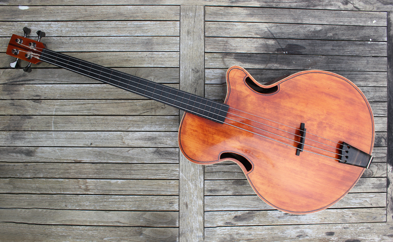

The acoustic bass is an instrument with a hollow wooden body. The bass guitar is similar to to an acoustic guitar, and it produces a deeper and thumpier tone. It does not need an amplifier, but some are "acoustic-electric," meaning that they can be amplifed. These types of basses are very portable; however, they have a smaller range of sounds and are not the best for slapping (when the thumb strikes the strings)
Length of Bass: Around 44-46 inches
Type of sound it makes: Warm, woody, and thumpy sounds.
Average cost: Around $300 to $700